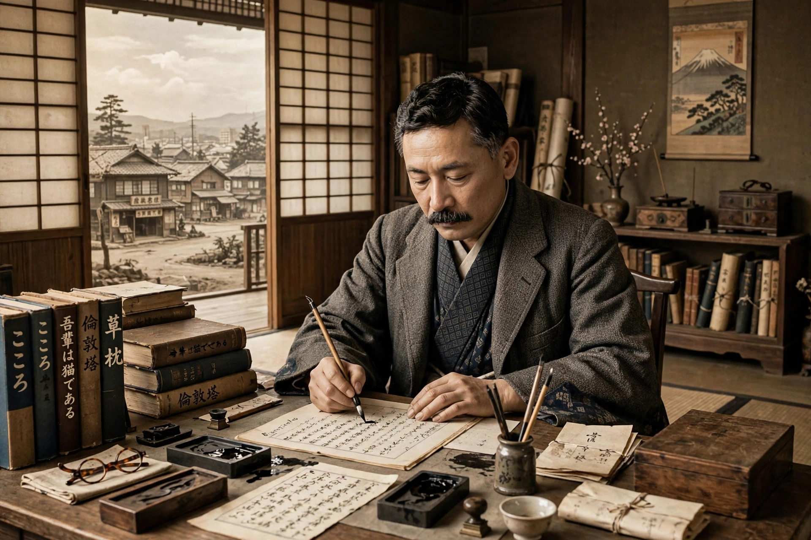

Born: Natsume Kin'nosuke, 9 February 1867, Edo (Tokyo), Japan
Died: 9 December 1916, Tokyo
Occupation: Novelist, scholar of English literature
Notable works: I Am a Cat, Botchan, Kokoro
Natsume Sōseki (夏目 漱石, 9 February 1867 – 9 December 1916), born Natsume Kin'nosuke, is widely considered the greatest writer in modern Japanese literature. His portrait appeared on the Japanese 1,000-yen banknote from 1984 to 2004.
Sōseki studied English literature at Tokyo Imperial University and spent 1900–1902 in London on a government scholarship, an often unhappy period that deepened his interest in the clash between Japanese tradition and Western modernization. Returning to teach in Tokyo, he began writing fiction in 1905.
His satirical debut I Am a Cat (1905–06) is narrated by a nameless cat. Botchan (1906) is a comic novel of a Tokyo teacher in Matsuyama. His later, darker trilogy includes Sanshirō, And Then, and The Gate. Kokoro (1914), exploring guilt, isolation, and a teacher-student bond ending in suicide, is his most famous novel and a fixture of Japanese school curricula. He died of a stomach ulcer while serializing Light and Darkness, left unfinished.